A Monuv é uma plataforma de VMS em nuvem que integra analíticos em vídeos para segurança e operação. Atuei como Product Designer, contribuindo em projetos como Double Check, Arme & Desarme, Conf.IA e Relatórios de uso.
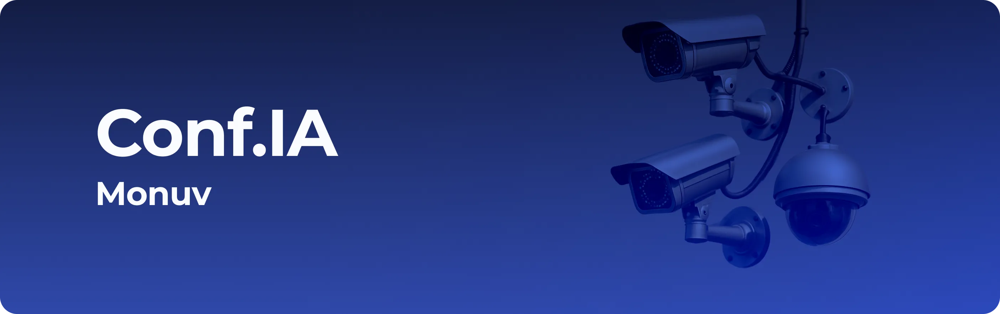
O Conf.IA é um analítico criado para identificar falhas, mudanças de cena e comportamentos anômalos em câmeras.
Falhas em câmeras online só eram percebidas em momentos críticos, exigindo verificações manuais constantes em grandes parques.
Alinhamentos entre produto, engenharia e negócio ajudaram a definir o público-alvo, os
principais problemas operacionais e uma solução que agregasse valor.
• Público-alvo: Parceiros com grandes parques de câmeras e monitoramento contínuo.
• Problemas identificados: Câmeras online com obstruções ou desalinhamentos, falhas percebidas apenas em momentos críticos e dependência de verificações manuais.
• Solução proposta: Inteligência analítica para monitorar mudanças de cena e alertar o parceiro de forma proativa.
• Desafios: Garantir confiabilidade, reduzir falsos positivos e viabilizar ativação em massa e autônoma das câmeras, inexistente até então na plataforma.
• Resultados esperados: Aumentar a confiança no monitoramento, reduzir esforço operacional e fortalecer a fidelização e adoção de novos módulos.
A análise considerou desde o primeiro contato com o Conf.IA dentro do VMS, passando pela ativação em massa e autônoma das câmeras, até o recebimento e a interpretação dos alertas gerados pela inteligência. Demos atenção especial às etapas de ativação e uso contínuo, onde a clareza das informações e a confiança no sistema eram fundamentais.
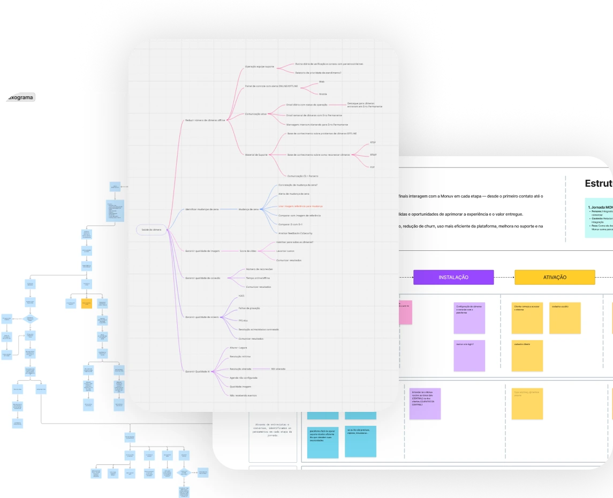
Após o lançamento, realizamos um rollout faseado com parceiros de grandes parques de câmeras, onde a automação se destacou frente ao monitoramento manual. Entrevistas com esse grupo orientaram ajustes técnicos e melhorias na interface, como a comparação entre a cena de referência e a cena após o alerta.
O design do Conf.IA priorizou clareza, confiabilidade e rapidez na tomada de decisão, integrando-se ao VMS da Monuv sem aumentar a complexidade. Diante da limitação de capacidade do time de front-end, optamos por reutilizar e adaptar componentes próximos aos existentes no Bootstrap, um trade-off que acelerou a entrega, reduziu riscos técnicos e garantiu consistência e escalabilidade da solução.
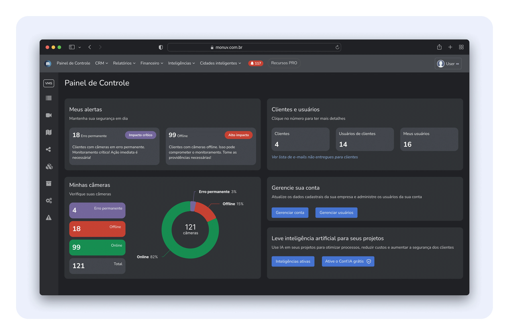
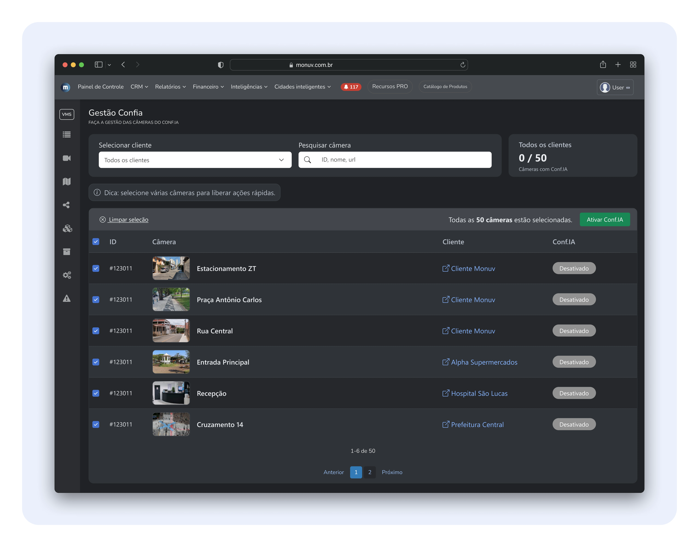
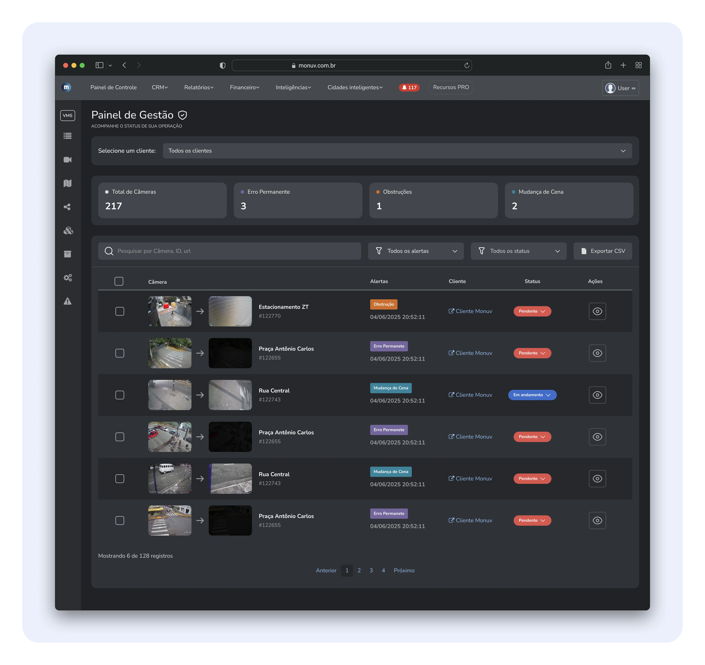
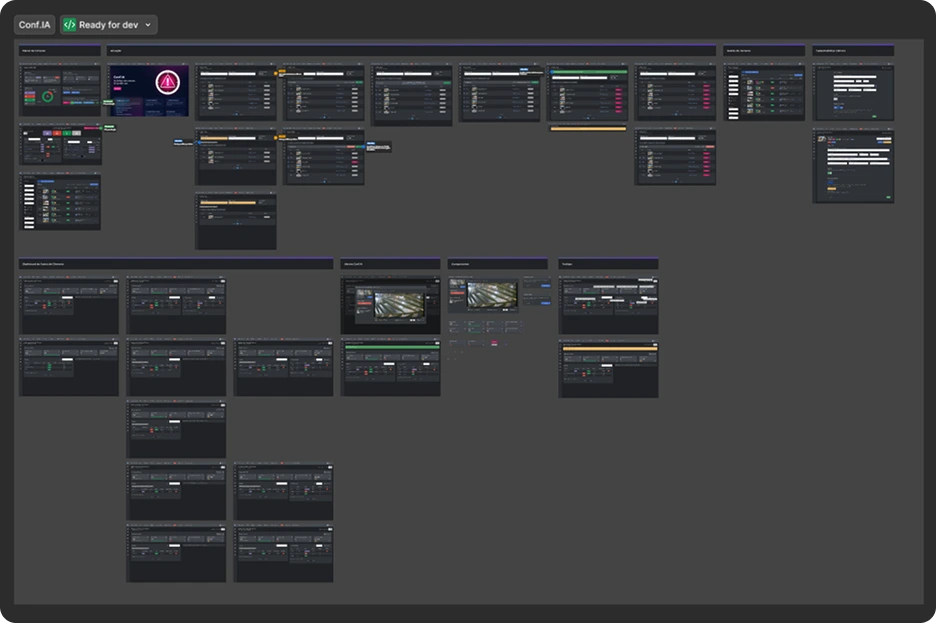
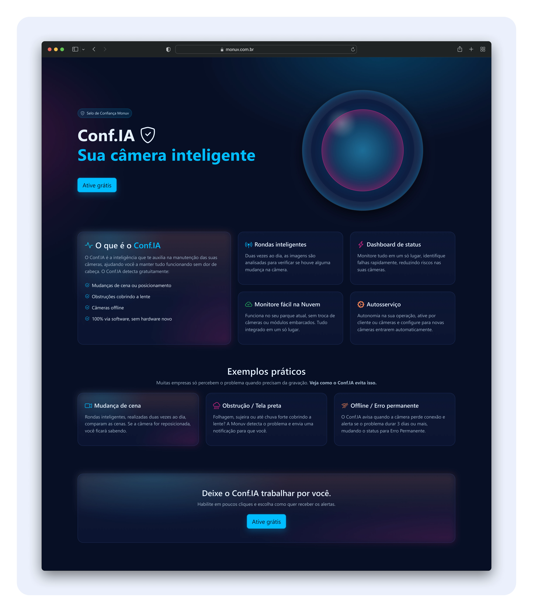
• +82% da base ativa interagiu com o Conf.IA e realizou a ativação autônoma nos três primeiros meses, sendo o primeiro produto da Monuv sem dependência do suporte.
• Ativação em massa bem-sucedida, reduzindo atrito operacional e tempo de configuração das câmeras.
• Maior retenção de usuários, com menor churn entre parceiros que ativaram o Conf.IA.
• Fechamento de parceiro estratégico, migrando de um concorrente direto e trazendo mais de 1.000 câmeras para a plataforma devido ao Conf.IA.
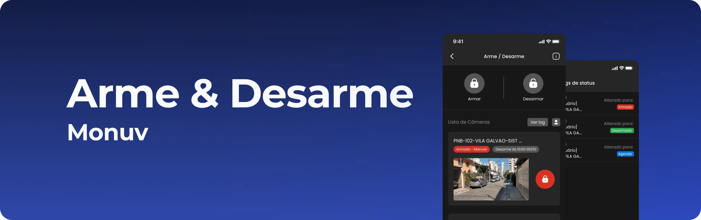
O Arme & Desarme permite ao usuário ativar e desativar analíticos diretamente, como detecção de presença e movimento, sem alterar a agenda principal do sistema.
A Monuv possuía apenas a ativação de analíticos via agenda no web, o que exigia alterar toda a configuração em situações pontuais e gerava risco de falhas operacionais.
A análise do Arme & Desarme mostrou que ajustes pontuais de analíticos eram feitos pelo
cliente final, que precisava de agilidade para lidar com exceções operacionais.
• Público-alvo: Clientes finais com ajustes operacionais pontuais.
• Problemas identificados: CDependência da agenda web, ajustes manuais e risco de esquecimento.
• Solução proposta: Arme e desarme dos analíticos direto pelo app, sem alterar a agenda.
• Desafios: Evitar erros operacionais e manter clareza na configuração.
• Resultados esperados: Mais autonomia e menor dependência do suporte.
A jornada foi pensada para permitir ajustes rápidos e seguros diretamente pelo aplicativo. A análise incluiu benchmarks de outros sistemas de alarme e entrevistas com parceiros que já utilizavam soluções semelhantes, ajudando a identificar boas práticas e pontos de atenção.
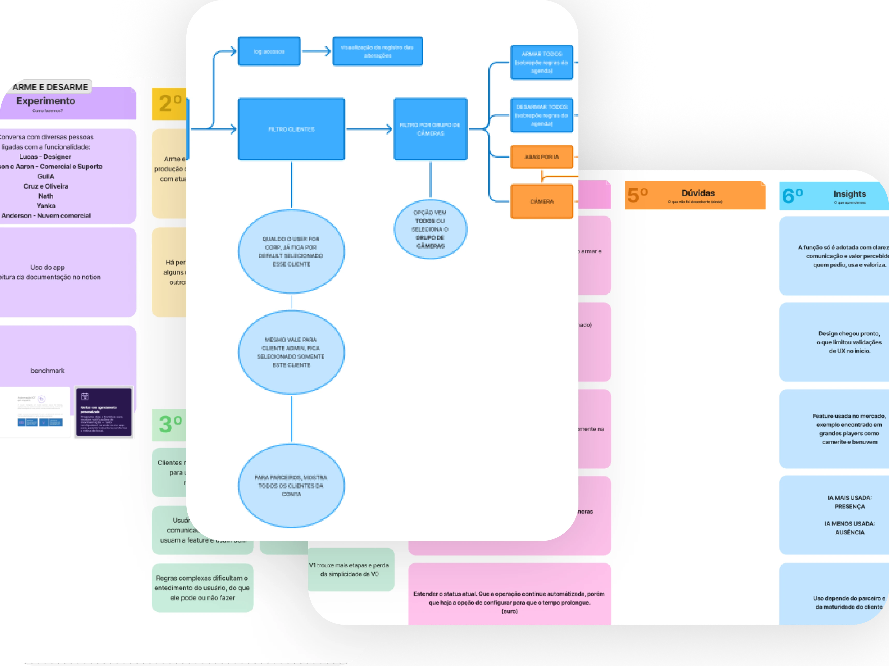
No rollout inicial, identificamos que usuários esqueciam de reativar os analíticos após exceções. Como solução, criamos o modo temporário, que automatiza o retorno ao comportamento padrão e reduz falhas operacionais.
A interface foi desenhada para ser simples e imediata, respeitando os padrões visuais já consolidados do aplicativo da Monuv. O foco esteve em reduzir erros de configuração e permitir decisões rápidas, mesmo em situações fora da rotina.
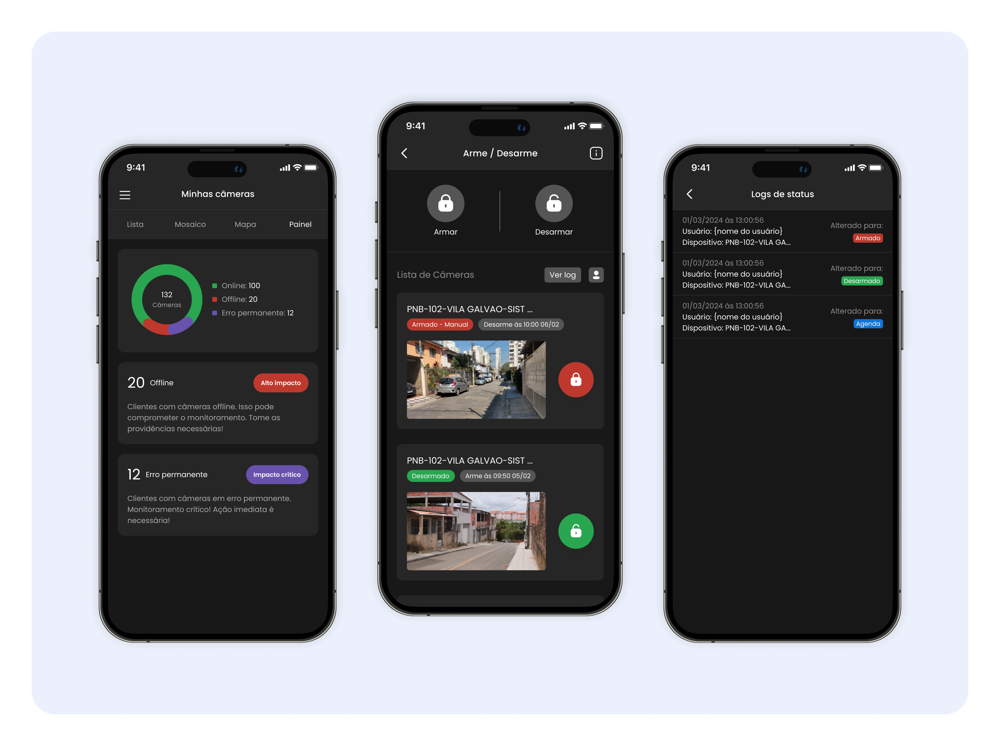
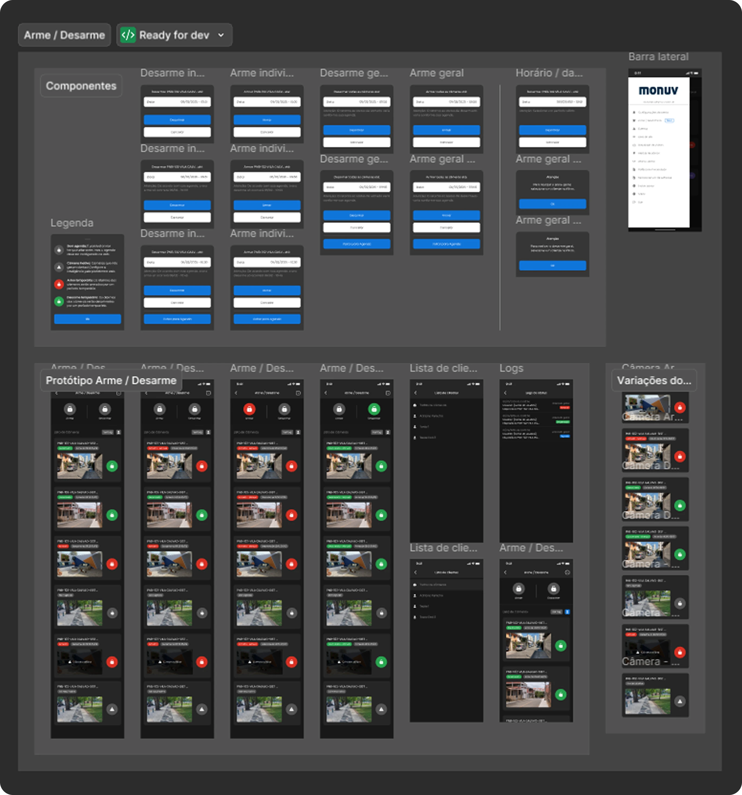
• Mais autonomia para ajustes pontuais no dia a dia do cliente final.
• Redução de falhas causadas por alterações manuais de agenda.
• Menor dependência do suporte para demandas recorrentes.
• Funcionalidade em evolução contínua, guiada pelo uso real.